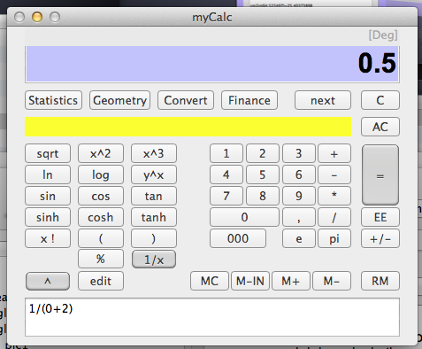

Errors in formulas
Back in good old days, when you got an calculation error in a formula, like divide by zero – the calculator completely locked up, and you had to turn it off and on to continue. This is not the case here. If you encounter an error, the display will show error, and a message explaining why in the yellow message area. You can still complete your formula. Since the calculator re-evaluate the formula every time you press a new function, you will have a series of intermediate results. If one of those intermediate results cause an error, it does not mean that the end result will be so. If it is, you can edit your formula in the end to correct the error.
Example: if you enter the formula: 1/(0+2) - when you hit the "+" sign, the calculator shows the error state. If you simply complete the formula, everything is OK. See the pictures below.

and then continue with 2 ) :

Everything is OK !!